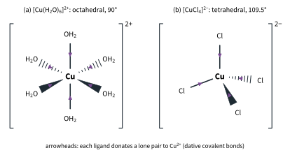
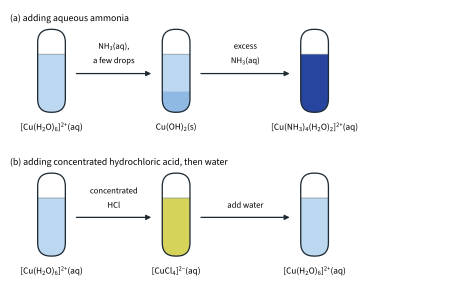
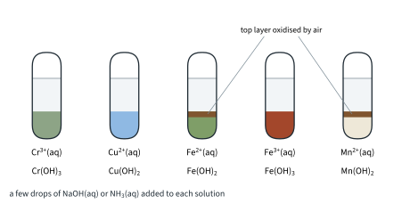
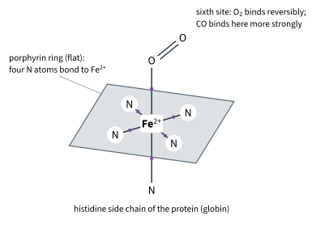
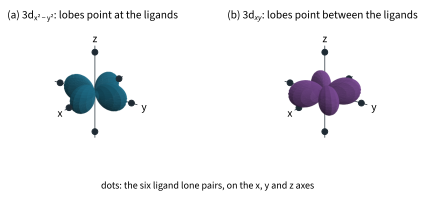
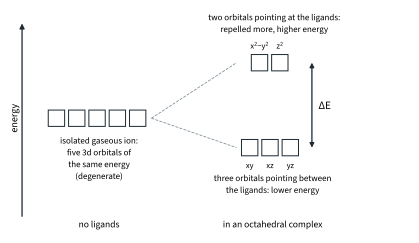
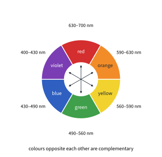
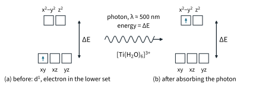

Transition Elements 2
Topic 13 · Transition Elements Part 2
On this page
Introduction
Dissolve copper(II) sulfate in water and you get a blue solution; add ammonia and it turns a deep, dark blue; add concentrated hydrochloric acid instead and it turns yellow-green. Each colour belongs to a different complex: a copper(II) ion surrounded by different molecules or ions. This Part explains what complexes are, how one can turn into another, and why they are coloured. Part 1 covers the configurations used here; Part 3 covers redox chemistry and catalysis.
Key terms
You will use these terms throughout this Part.
| Term | Meaning |
|---|---|
| Ligand | A species (molecule or anion) with at least one lone pair of electrons that it donates to a central metal atom or ion, forming a dative covalent (co-ordinate) bond. |
| Complex (complex ion) | A central metal atom or ion surrounded by ligands bonded to it by dative covalent bonds. A complex with an overall charge is a complex ion. |
| Dative covalent (co-ordinate) bond | A covalent bond in which both electrons of the shared pair come from the same atom (Topic 2). |
| Coordination number | The number of dative bonds from the ligands to the central metal atom or ion. |
| Ligand exchange | A reaction in which one ligand in a complex is replaced by another. |
| Degenerate orbitals | Orbitals of the same energy, e.g. the five 3d orbitals of an isolated gaseous ion. |
| d-d transition | The promotion of an electron from a lower-energy d orbital to a higher-energy d orbital of the same metal ion, by absorbing light. |
| Complementary colour | The colour seen when one colour is removed from white light: the colour opposite it on the colour wheel. |
Ligands and complexes
A copper(II) ion in water is not a bare Cu2+. Six water molecules each donate a lone pair from their oxygen atom to the ion, forming the complex ion [Cu(H2O)6]2+ (Fig 7(a)). You met the same kind of species in Topic 4 Part 1 (Fig 5), where [Fe(H2O)6]3+ was a Lewis acid-base adduct: the ligands are Lewis bases (electron-pair donors) and the metal ion is a Lewis acid (electron-pair acceptor).
Transition metal ions form complexes far more readily than s-block ions such as Ca2+, for two reasons:
- they are small and highly charged, so they attract lone pairs strongly;
- they have vacant orbitals of suitable energy (in the 3d, 4s and 4p subshells) to accept the lone pairs.
Every ligand must have a lone pair. The common ones, with the atom that donates the pair:
| Ligand | H2O | NH3 | Cl− | OH− | CN− |
|---|---|---|---|---|---|
| Donor atom | O | N | Cl | O | C |
CH4 cannot be a ligand: it has no lone pair. Nor can NH4+: the lone pair that NH3 had is now used in the bond to the fourth H+ (Topic 4).

Shapes, charges and oxidation numbers
The shape of a complex depends on its coordination number. The ligands' electron pairs repel each other and get as far apart as possible, as in VSEPR (Topic 2):
| Coordination number | Shape | Bond angle | Example |
|---|---|---|---|
| 6 | octahedral | 90° | [Cu(H2O)6]2+, [Fe(CN)6]3− |
| 4 | tetrahedral | 109.5° | [CuCl4]2− |
| 2 | linear | 180° | [Ag(NH3)2]+ (Topic 10) |
Six is the commonest coordination number.1 Large ligands such as Cl− often give four instead, because six of them will not fit round the metal ion.
Worked example 1: charges and oxidation numbers
Find the oxidation number of the metal in each complex.
(To answer this, you have to set the oxidation number of the metal as x and add the ligand charges: the total equals the charge on the complex.)
| Complex | Working | Metal | Coordination number |
|---|---|---|---|
| [Cu(NH3)4(H2O)2]2+ | x + 4(0) + 2(0) = +2 | Cu +2 | 6 |
| [CuCl4]2− | x + 4(−1) = −2 | Cu +2 | 4 |
| [Fe(CN)6]3− | x + 6(−1) = −3 | Fe +3 | 6 |
| [Cr(OH)6]3− | x + 6(−1) = −3 | Cr +3 | 6 |
Notice that the charge on a complex can be positive or negative: Cu2+ with four Cl− ligands gives an anion, (+2) + 4(−1) = −2.2
Copper(II) with water, ammonia and chloride ions
9476 uses copper(II) to show how ligands can replace one another. In each reaction below, one ligand replaces another: a ligand exchange.
Worked example 2: copper(II) with ammonia and with hydrochloric acid
Describe and explain what is seen when (a) aqueous ammonia is added dropwise, then in excess, to aqueous copper(II) sulfate; (b) concentrated hydrochloric acid is added to aqueous copper(II) sulfate, and the mixture is then diluted with water. Write equations.
(To answer part (a), you have to see that ammonia acts in two ways: first as a base, then as a ligand.)
(a) The solution of [Cu(H2O)6]2+ is pale blue. A few drops of aqueous ammonia give a blue precipitate of copper(II) hydroxide. Here ammonia acts as a base: it reacts with water to give hydroxide ions, which precipitate the hydroxide.
NH3(aq) + H2O(l) ⇌ NH4+(aq) + OH−(aq)
Cu2+(aq) + 2OH−(aq) → Cu(OH)2(s)
In excess ammonia the precipitate dissolves to give a dark blue solution. Now ammonia acts as a ligand: four NH3 molecules replace water ligands.
Cu(OH)2(s) + 4NH3(aq) + 2H2O(l) → [Cu(NH3)4(H2O)2]2+(aq) + 2OH−(aq)
Overall, with excess ammonia, this is a ligand exchange:
[Cu(H2O)6]2+(aq) + 4NH3(aq) ⇌ [Cu(NH3)4(H2O)2]2+(aq) + 4H2O(l)
The complex is often written [Cu(NH3)4]2+ for short, as in the Data Booklet couple [Cu(NH3)4]2+/Cu (Topic 12 Part 2). It is still octahedral: four NH3 in a square around the copper, with two H2O above and below.3
(To answer part (b), you have to notice that the chloride ion is a bigger ligand than water, and charged.)
(b) With concentrated hydrochloric acid the solution turns yellow-green, then yellow, as Cl− ions replace the water ligands:
[Cu(H2O)6]2+(aq) + 4Cl−(aq) ⇌ [CuCl4]2−(aq) + 6H2O(l)
The coordination number changes from 6 to 4 and the shape from octahedral to tetrahedral, because Cl− ions are larger than water molecules and, being negatively charged, repel each other strongly: only four fit round the Cu2+. The yellow-green colour is a mixture of yellow [CuCl4]2− and blue [Cu(H2O)6]2+. Dilute the mixture with water and the colour goes back to blue. Water is the solvent, so it does not appear in Kc; adding water lowers [Cl−] and the other concentrations, so the side with more dissolved particles is favoured and the position shifts to the left.

Ligand exchange is an equilibrium
Ligand exchange happens when the new complex is more stable than the old one, but it is an equilibrium, and the position of equilibrium shifts with concentration as Le Chatelier's Principle predicts (Topic 9 Part 2). Adding a lot of Cl− pushes [Cu(H2O)6]2+ to [CuCl4]2−. Adding water lowers [Cl−] and the other concentrations, so the side with more dissolved particles, the left, is favoured (water, the solvent, does not appear in Kc). The cobalt chloride equilibrium of Topic 9 Part 2, and the blood-red iron(III) thiocyanate complex of the same Part, are ligand exchanges of the same kind.
Hydroxide precipitates in qualitative analysis
The Data Booklet's Qualitative Analysis Notes list what happens when aqueous sodium hydroxide or aqueous ammonia is added to a solution of each cation. Five of the cations are transition metal ions. In the booklet's own words, with the species formed:
| Ion | NaOH(aq) | NH3(aq) | Species formed |
|---|---|---|---|
| Cr3+(aq) | grey-green ppt. soluble in excess giving dark green solution | grey-green ppt. insoluble in excess | Cr(OH)3(s); in excess NaOH, [Cr(OH)6]3−(aq) |
| Cu2+(aq) | pale blue ppt. insoluble in excess | blue ppt. soluble in excess giving dark blue solution | Cu(OH)2(s); in excess NH3, [Cu(NH3)4(H2O)2]2+(aq) |
| Fe2+(aq) | green ppt., turning brown on contact with air; insoluble in excess | green ppt., turning brown on contact with air; insoluble in excess | Fe(OH)2(s), oxidised by air to Fe(OH)3(s) |
| Fe3+(aq) | red-brown ppt. insoluble in excess | red-brown ppt. insoluble in excess | Fe(OH)3(s) |
| Mn2+(aq) | off-white ppt., rapidly turning brown on contact with air; insoluble in excess | off-white ppt., rapidly turning brown on contact with air; insoluble in excess | Mn(OH)2(s), oxidised by air to a brown manganese(III)/(IV) oxide-hydroxide |
With aqueous ammonia the hydroxide ions come from NH3 + H2O ⇌ NH4+ + OH−, as in worked example 2. The precipitation equations are:
Cr3+(aq) + 3OH−(aq) → Cr(OH)3(s)
Cu2+(aq) + 2OH−(aq) → Cu(OH)2(s)
Fe2+(aq) + 2OH−(aq) → Fe(OH)2(s)
Fe3+(aq) + 3OH−(aq) → Fe(OH)3(s)
Mn2+(aq) + 2OH−(aq) → Mn(OH)2(s)

Three of the observations need explaining:
- Cr(OH)3 dissolves in excess NaOH(aq) because it is amphoteric, like Al(OH)3 in Topic 5 Part 2: it reacts with excess hydroxide to form a soluble complex. Aqueous ammonia does not provide a high enough [OH−], so with ammonia the precipitate stays.
Cr(OH)3(s) + 3OH−(aq) → [Cr(OH)6]3−(aq)
- Cu(OH)2 dissolves in excess NH3(aq) because ammonia forms a complex with Cu2+ (worked example 2). This is complex formation, not amphoterism: Cu(OH)2 does not dissolve in excess NaOH.
- Fe(OH)2 and Mn(OH)2 turn brown in air because oxygen oxidises them: iron(II) to iron(III), and manganese(II) to a brown manganese(III)/(IV) oxide-hydroxide. Part 3 uses E⦵ to show why Fe(OH)2 is oxidised so easily:
4Fe(OH)2(s) + O2(g) + 2H2O(l) → 4Fe(OH)3(s)
The acidity of [Fe(H2O)6]3+ (Further example)
Solutions of iron(III) salts are acidic, about pH 1.7 for 0.1 mol dm−3 (literature value, approximate). The small, highly charged Fe3+ ion pulls electron density from the O–H bonds of its water ligands, so one of them loses a proton, just as [Al(H2O)6]3+ does in Topic 5 Part 2:
[Fe(H2O)6]3+(aq) + H2O(l) ⇌ [Fe(H2O)5(OH)]2+(aq) + H3O+(aq)
Fe3+ is more acidic than Fe2+ because it has a higher charge density: charge / radius = 3 / 0.055 = 54.5 nm−1 for Fe3+, against 2 / 0.061 = 32.8 nm−1 for Fe2+ (Data Booklet ionic radii). The [Fe(H2O)5(OH)]2+ formed is one reason iron(III) solutions look yellow-brown rather than the pale violet of [Fe(H2O)6]3+.4
Haemoglobin: oxygen and carbon monoxide
Haemoglobin, the protein that carries oxygen in red blood cells, contains four haem groups. Each haem group holds one Fe2+ ion at the centre of a flat porphyrin ring (Fig 10):
- the porphyrin ring bonds to the Fe2+ through four N atoms, each donating a lone pair;5
- a fifth dative bond comes from an N atom of a histidine side chain in the protein (globin), below the ring;
- the sixth site, above the ring, binds an O2 molecule reversibly, giving oxyhaemoglobin. The six dative bonds are arranged octahedrally.
In the lungs, where there is plenty of oxygen, O2 binds to the iron; in the tissues, where there is little, it is released. This works because the O2 is held only weakly, so its binding is easily reversed.

Why carbon monoxide is poisonous
Carbon monoxide has a lone pair on its carbon atom and binds at the same site as O2, more than 200 times as strongly as O2 (literature value; Topic 11.4). It displaces oxygen in a ligand exchange:
HbO2 + CO ⇌ HbCO + O2
The equilibrium lies far to the right, and the binding of CO is not readily reversed, so even a small concentration of CO in air ties up a large fraction of the haemoglobin and the blood carries less oxygen. Victims are treated with pure oxygen, sometimes at high pressure: the large [O2] shifts the position of equilibrium to the left (Le Chatelier), releasing the CO from the haemoglobin. Car exhaust is one source of CO (Topic 11.4; catalytic converters, Part 3).
Splitting of the d orbitals
To explain the colours of complexes you need the shapes of the five 3d orbitals from Topic 1 Part 2 (Fig 4 there). They are of two kinds:
- 3dxy, 3dxz and 3dyz have their lobes between the axes;
- 3dx²−y² has its lobes along the x and y axes, and 3dz² along the z axis (with a ring in the xy plane).
In an isolated gaseous ion the five 3d orbitals all have the same energy: they are degenerate. Now surround the ion with six ligands in an octahedron. Put the metal at the origin and the ligands on the axes, at ±x, ±y and ±z. The lone pairs of the ligands point straight at the lobes of 3dx²−y² and 3dz², but between the lobes of the other three (Fig 11).
Electrons in 3dx²−y² and 3dz² are repelled more strongly by the ligands' lone pairs than electrons in 3dxy, 3dxz and 3dyz. So those two orbitals are raised in energy relative to the other three, and the five d orbitals split into two energy levels (Fig 12). The difference in energy between the two sets is ΔE.6


Other shapes split the d orbitals in other ways; 9476 asks only about the octahedral case.7
Why transition element complexes are coloured
White light is a mixture of all the colours of the visible spectrum, from violet (about 400 nm) to red (about 700 nm). A substance looks coloured when it absorbs some of those wavelengths: we see the light that is left.
The energy of the photon and its wavelength are linked by
ΔE = hf = hc / λ (for one ion) ΔE × L (for one mole)
with h = 6.63 × 10−34 J s, c = 3.00 × 108 m s−1 and L = 6.02 × 1023 mol−1 (Data Booklet). The colour wheel (Fig 13) shows which colour you see: it is the one opposite the colour absorbed. Red and green are complementary, so are orange and blue, and yellow and violet.

Worked example 3: titanium(III)
[Ti(H2O)6]3+ absorbs light most strongly at about 500 nm (literature value). (a) Calculate ΔE, per ion and per mole. (b) Explain why the solution looks purple.
(To answer part (a), you have to convert the wavelength to metres before using ΔE = hc/λ, and keep the unrounded value for the second step.)
ΔE = hc / λ = (6.63 × 10−34 × 3.00 × 108) / (500 × 10−9) = 3.978 × 10−19 J = 3.98 × 10−19 J per ion
per mole: (3.978 × 10−19) × (6.02 × 1023) = 2.3948 × 105 J mol−1 = 239 kJ mol−1 (3 s.f.)
(b) Ti3+ is [Ar]3d1: its single d electron sits in the lower set. It absorbs a photon of energy ΔE and is promoted to the upper set (Fig 14). 500 nm is in the green part of the spectrum, and the absorption band is broad, covering the green and yellow. So the red and the blue-violet light get through, and together they look purple.

Worked example 4: which complexes are colourless?
Explain why [Sc(H2O)6]3+ and [Zn(H2O)6]2+ are colourless, while [Ti(H2O)6]3+ and [Cu(H2O)6]2+ are coloured.
(To answer this, you have to write the d configuration of each ion and ask whether a d-d transition is possible: it needs an electron in the lower set and a space for it in the upper set.)
| Ion | Configuration | d-d transition? | Colour |
|---|---|---|---|
| Sc3+ | [Ar], d0 | no: there is no d electron to promote | colourless |
| Zn2+ | [Ar]3d10, d10 | no: the upper set is full, so there is no space to promote an electron into | colourless |
| Ti3+ | [Ar]3d1, d1 | yes: one electron in the lower set, upper set empty | coloured (purple) |
| Cu2+ | [Ar]3d9, d9 | yes: one vacancy in the upper set | coloured (blue) |
The same reasoning explains why the compounds of scandium(III) and zinc(II), and many copper(I) (Cu+, d10) compounds such as CuI and CuCl, are white.
What decides ΔE, and so the colour
ΔE, and with it the colour, depends on
- the metal;
- its oxidation state (Fe2+ and Fe3+ complexes differ in colour);
- the ligands;
- the number of ligands and the shape of the complex (6 against 4).
That is why ligand exchange changes the colour. For copper(II):
- [Cu(H2O)6]2+ absorbs a broad band of light, strongest at about 800 nm in the near infrared (literature value). For 800 nm, ΔE = hc/λ × L = 150 kJ mol−1. The band spreads into the red and orange, so the solution looks pale blue.
- [Cu(NH3)4(H2O)2]2+ absorbs most strongly at about 600 nm (literature value): a larger ΔE, about 200 kJ mol−1. It absorbs the orange and yellow light more strongly, and the solution looks a deep, dark blue.
Not every coloured transition metal species is coloured because of d-d transitions.8
Summary
The ideas of this Part in one table.
| Idea | Key points |
|---|---|
| Ligand and complex | Ligand: lone-pair donor (Lewis base) forming a dative bond to a metal atom or ion (Lewis acid). Complex: metal surrounded by ligands. Charge = metal + ligands. |
| Shapes | 6: octahedral, 90°; 4: tetrahedral, 109.5° ([CuCl4]2−); 2: linear, 180° ([Ag(NH3)2]+). |
| Copper(II) | [Cu(H2O)6]2+ pale blue; NH3 a little: Cu(OH)2 blue ppt.; excess: [Cu(NH3)4(H2O)2]2+ dark blue. Concentrated HCl: [CuCl4]2− yellow (6 → 4); water reverses it. |
| Qualitative Analysis | Cr(OH)3 grey-green, amphoteric; Cu(OH)2 blue, dissolves in NH3; Fe(OH)2 green and Mn(OH)2 off-white, both oxidised by air to brown; Fe(OH)3 red-brown. |
| Haemoglobin | Fe2+ in porphyrin (4 N) + histidine N; O2 at the sixth site. CO binds over 200 times more strongly (literature): HbO2 + CO ⇌ HbCO + O2; treat with O2. |
| d-orbital splitting | Octahedral: 3dx²−y² and 3dz² point at the ligands, raised; 3dxy, 3dxz, 3dyz lower. Gap ΔE. |
| Colour | Photon of energy ΔE = hc/λ absorbed, d electron promoted (d-d transition); complementary colour seen. d0 and d10 (Sc3+, Zn2+, many Cu+ compounds such as CuI): colourless or white. Ligand order not required. |
Additional information
- Beyond the syllabus: some complexes with coordination number 4 are square planar (bond angle 90°), for example [Ni(CN)4]2− and the anticancer drug cisplatin, [Pt(NH3)2Cl2]. ↩
- Beyond the syllabus: complexes have systematic names, for example hexaaquacopper(II) for [Cu(H2O)6]2+, tetrachlorocuprate(II) for [CuCl4]2− and hexacyanoferrate(III) for [Fe(CN)6]3−. 9476 does not ask you to name complexes. ↩
- Beyond the syllabus: copper(II) octahedra are distorted, with the two bonds along one axis longer than the other four. This is part of the reason the two water molecules in [Cu(NH3)4(H2O)2]2+ are not replaced by ammonia in aqueous solution. ↩
- Beyond the syllabus: [Fe(H2O)6]3+ itself is pale violet and is seen only in strongly acidic solution, where the equilibrium above lies to the left. In water, hydrolysis and complexes with the anions present give the familiar yellow to orange-brown colour. ↩
- Beyond the syllabus: a ligand that forms more than one dative bond to the same metal ion, as the porphyrin ring does, is called polydentate. ↩
- Beyond the syllabus: the lower set of three is labelled t2g and the upper set of two eg. ↩
- Beyond the syllabus: in a tetrahedral complex the splitting is the other way round (two orbitals lower, three higher) and smaller, about 4/9 of the octahedral ΔE for the same metal and ligands (literature value). ↩
- Beyond the syllabus: MnO4− (Mn +7, d0) and Cr2O72− (Cr +6, d0) have no d electrons, yet they are intensely purple and orange. Their colour comes from charge transfer: light moves an electron from an oxygen atom to the metal. These colours are much more intense than d-d colours. ↩